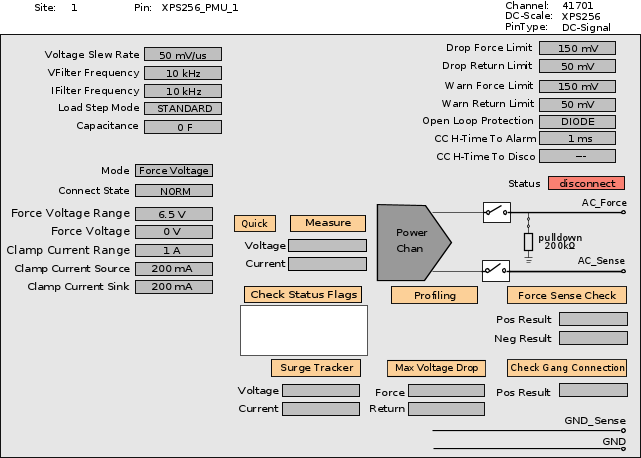

XPS256 in PMU operating mode
In PMU operating mode, an XPS256 channel is used like a standard PMU to temporarily supply power during the execution of a single test suite or a group of test suites.
Configuration
An XPS256 channel is configured for the PMU operating mode if the channel is defined as a DC Scale pin using the Digital Pins editor.
Characteristics
An XPS256 channel in PMU operating mode is typically used for VI applications. The channel provides a positive or negative voltage or current up to the programmed clamp current or voltage and is basically programmed using test methods and APIs.
The static and dynamic behavior is defined by a combination of the connection state, the measurement mode, and the execution mode as described below. For more information refer to the XPS256 programming - PMU operating mode.
Hardware view of XPS256 in PMU operating mode:

See also section Hardware view in XPS256 programming - PMU operating mode.
Measurement state
The measurement mode defines the behavior of the channel when it is configured for the PMU operating mode. For more information, refer to SPMU_PIN_TASK.mode().
The following measurement modes are supported:
| "IFVM" |
Force current and measure voltage. This legacy mode is set so that voltage is forced and the required current is defined via symmetrical set current clamp values. Therefore, you must observe the minimum clamp current distance for setting the forced current in the "IFVM" mode. XPS256 supports also the real current forcing modes "CFVM" and "CFIM". |
| "VFIM" | Force voltage and measure current. |
| "VM_HIZ" | High impedance voltage measurement. |
| "IFVM_UNGANGED" | Force current and measure voltage by temporarily separating ganged channels for this measurement. |
| "VFIM_UNGANGED" | Force voltage and measure current by temporarily separating ganged channels for this measurement. |
| "VFVM" | Force voltage and measure voltage. |
| "CFVM" | Force current directly and measure voltage. |
| "CFIM" | Force current directly and measure current. |
Measurement mode
The measurement mode defines the force mode and the measurement mode of the channel when it is configured for the PMU operating mode. For more information and a list of all supported measurement modes, refer to XPS256 programming - PMU operating mode.
Execution mode
The execution mode defines the measurement behavior of the channel when it is configured for the PMU operating mode. For more information refer to SPMU_PIN_TASK.execMode().
The following execution modes are supported:
- "SER": Serial measurements are performed per device, but in multisite tests multiple sites are tested in parallel whenever possible.
- "PAR": Parallel measurements are performed per device and on all sites whenever possible.
Connecting and disconnecting channels in PMU operating mode
An XPS256 channel in PMU operating mode does not take part in standard connect and disconnect sequences and cannot take part in the set activation, although the channel can be added to user-defined connect and disconnect sequences.
Unlike other DC Scale cards in DPS operating mode, an XPS256 channel in PMU operating mode needs not to be disconnected for changing the force voltage range or the force current range. XPS256 supports changing the force voltage range and the force current range in connected state both for the DPS operating mode and for the PMU operating mode.
Relay switching in PMU operating mode
The relay() member function of the SPMU_PIN_TASK class selects the termination mode that specifies the relay control pattern of the target pins.
DC-Scale cards support the following relay switching modes:
- NO
- NT
The termination modes NTMBB, NTBBM, and TERM are not supported by DC-Scale cards.
The tables below show the effect of relay switching with and without preCharge.
| SPMU_TASK.execMode() | FORCE_ON | GPF | PPF | PVAL | FORCE_OFF | |||
|---|---|---|---|---|---|---|
| SPMU_PIN_TASK.relay() | NO | NT | NO | NT | NO | NT |
| Setup PMU | Yes | Yes | Yes | Yes | Yes | Yes |
| Close relay | leave unchanged | Yes | leave unchanged | Yes | leave unchanged | leave unchanged |
| Do measure | No | No | Yes | Yes | No | No |
| Open relay | leave unchanged | leave unchanged | leave unchanged | Yes | leave unchanged | Yes |
| SPMU_TASK.execMode() | FORCE_ON | GPF | PPF | PVAL | FORCE_OFF | |||
|---|---|---|---|---|---|---|
| SPMU_PIN_TASK.relay() | NO | NT | NO | NT | NO | NT |
| Precharge PMU | No | Yes | No | Yes | No | No |
| Close relay | leave unchanged | Yes | leave unchanged | Yes | leave unchanged | leave unchanged |
| Setup PMU | Yes | Yes | Yes | Yes | Yes | Yes |
| Do measure | No | No | Yes | Yes | No | No |
| Open relay | leave unchanged | leave unchanged | leave unchanged | Yes | leave unchanged | Yes |
For further details see the SPMU_TASK and SPMU_PIN_TASK test method APIs.
Functional changes
- Introduced in SmarTest 7.10.1